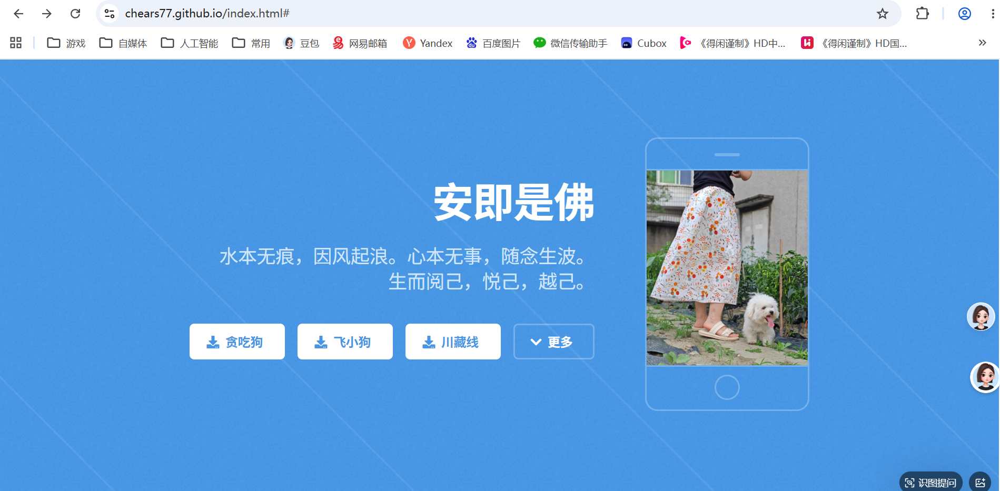
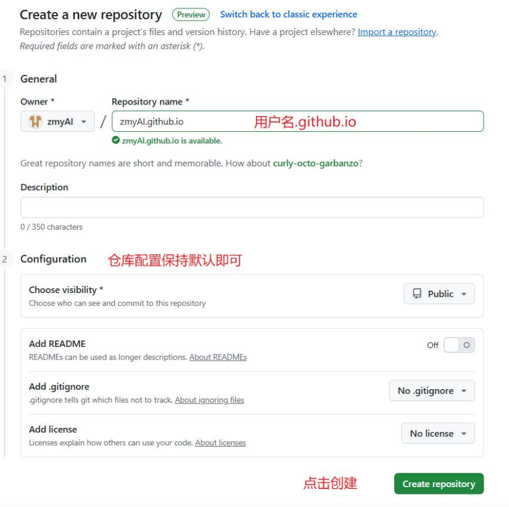

很早以前就想搭建一个个人主页，基于两个方面考虑，一直没有实现。一个是学习成本比较高，以前尝试过用 PHP，但是需要很强的代码能力，包括前端和后端。第二方面是没有一个站点可以免费发布。也就是说当时用 PHP 通过模板生成的网站只能在本地运行，不能够放在网上让别人可观可看。随着 AI 的崛起，我又重新将这个事情纳入了考虑。于是我通过豆包和 GitHub 实现了我之前的想法，我做的网页如下图。我把我的尝试过程和解决方案发出来，方便大家学习。

一、和豆包对话过程（不断迭代和试错）
迭代1：选择托管平台
我的问题：帮我找找免费静态网页托管平台。
豆包回答：国内可用 Gitee Pages、Zeabur 免费托管静态网页，海外选 GitHub Pages、Cloudflare、Netlify，均无需备案，支持直接上传部署。
我的尝试：我选择了GitHub。
迭代2：通过GitHub搭建个人网页完整过程
我的问题：我想用我的github做我的一个个人主页，你帮我实现，教我。我已经注册并登录了github了，进入主页后需要做什么。
豆包回答：
GitHub Pages 搭建个人主页完整手把手教程（你已登录 GitHub，从首页开始操作）
一、第一步：创建专属网站仓库（最关键，名字不能错）

新建仓库填写页面
-
页面右上角，点 + 下拉箭头 → New repository（新建仓库）
-
仓库名称严格填写：你的 GitHub 用户名.github.io
-
举例：你 GitHub 账号叫
lisi123，仓库名必须是lisi123.github.io，一字不差、大小写匹配
-
-
配置选项：
-
Visibility（可见性）：选 Public（公开）（私有仓库免费版不能开 Pages）
-
Add a README file：可以勾选（方便备注）
-
Add .gitignore/ License：全部选 None 不用管
-
-
点击最下方 Create repository 创建仓库
二、第二步：上传首页文件 index.html（两种方法，新手推荐网页上传）
方式 1：网页直接创建文件（不用装 Git 软件，零门槛）

仓库内添加文件按钮
-
进入刚建好的
xxx.github.io仓库主页 -
点击绿色按钮 Add file → Create new file
-
文件名输入：index.html（必须叫这个，网站默认打开它）
-
下方大编辑框粘贴下面基础测试代码：
html
预览
<!DOCTYPE html>
<html lang="zh-CN">
<head>
<meta charset="UTF-8">
<meta name="viewport" content="width=device-width, initial-scale=1.0">
<title>我的个人主页</title>
<style>
body{text-align:center;margin-top:100px;font-family:微软雅黑;}
</style>
</head>
<body>
<h1>欢迎来到我的个人主页</h1>
<p>这是用GitHub Pages免费搭建的网站</p>
</body>
</html>
-
滑到最底部，Commit changes（提交），直接点 Commit new file 保存文件
方式 2：本地写好文件批量上传（适合后续多文件：css、图片、js）
-
本地电脑建好文件夹，里面放
index.html、样式 css、图片等所有网页素材 -
仓库页面点 Add file → Upload files
-
把本地文件夹里全部文件拖进上传框，底部提交保存
三、第三步：开启 GitHub Pages 部署功能
-
在仓库顶部导航栏，点击 Settings（设置）
-
左侧菜单栏往下滑，找到 Pages 点开配置页
-
Build and deployment（部署来源）设置：
-
Source 选择：Deploy from a branch
-
Branch（分支）：选 main
-
Folder（文件夹）：选 /(root) 根目录
-
-
点击蓝色 Save 保存配置
四、第四步：访问你的个人网站
-
保存后等待 1–3 分钟（GitHub 后台打包部署）
-
浏览器打开地址：
https://你的用户名.github.io -
刷新页面就能看到你写的 index.html 内容；如果 404，多等一会再刷新
五、后续美化 & 更新网站
-
修改页面内容
-
网页端：点开 index.html，点铅笔编辑图标，改完提交
-
熟练后可以装 Git，本地改完一键推送更新
-
-
套好看模板（不用手写 HTML） 网上搜 GitHub Pages 免费模板（Jekyll 模板、静态 HTML 模板），下载全部文件替换仓库里的文件，重新提交即可一键换皮肤
-
区分两个 “主页” 别搞混
-
-
xxx.github.io是独立网站（浏览器打开的完整网页站点）
-
-
-
和用户名同名仓库的 README，是你 GitHub 账号头像下面的简介卡片（只是资料展示，不是独立网址网站）
-
-
-
常见踩坑提醒
-
仓库名字写错、少
.github.io→ 网站无法生成 -
文件不叫 index.html、放在子文件夹里 → 打开 404 空白
-
仓库设为 Private 私有 → Pages 功能直接不可用
-
刚保存配置立刻访问大概率 404，一定要等几分钟部署完成
需要我给你一份可直接复制、带头像 / 技能 / 项目展示的完整美化 HTML 主页代码吗？
我的尝试：我用他的方法实现我的第一个互联网可以访问的个人网页。但是我想做得更漂亮。
迭代3：找好用的模板
我的问题：我想搭建个人主页，完全不会写代码，网上模板乱七八糟，很多收费、带广告、不能用在GitHub，请问哪里有靠谱的免费模板？
豆包回答：专门适配GitHub/Gitee Pages的纯静态HTML免费模板站，无后端、无版权、解压即用，推荐3个优质合集：HTML5 UP：极简高级、代码干净、无冗余；模板之家：国内海量免费静态模板，中文分类、下载不限速；Templatemo：上千套自适应模板，支持电脑手机双端。
我的尝试：我试了下里面的，在HTML5 UP（https://html5up.net/）这个网站上有很多模板，我选择了自己喜欢的模板，并免费下载。
关键避坑优化：只下载「纯静态HTML模板」，坚决避开PHP、动态后端模板，从源头避免无法部署、网站报错的问题。
迭代4：将模板部署到我的github上
我的问题：我已经下载了一个模板，解压里面内容如图，我如何将他部署到我的github主页上呢，一步一步教我，我是小白。
豆包回答：你的 GitHub 仓库名字必须是：你的github用户名.github.io，仓库是Public 公开，没有的话先按第一步新建仓库
步骤 1：新建 / 确认专属网站仓库
-
登录 GitHub 网页，右上角点
+→New repository -
Repository name 严格填写：
你的用户名.github.io（一个字符都不能错） -
勾选
Public（私有免费版无法开启 Pages） -
不用勾选 README、gitignore，直接点底部 Create repository
步骤 2：上传全部模板文件到仓库（网页拖拽上传，不用装 Git 软件）
-
进入刚创建好的
xxx.github.io仓库主页 -
点击绿色按钮
Add file→Upload files -
打开你电脑里的
MeFamily文件夹 -
全选里面所有内容：
-
两个文件夹：
assets、forms -
所有
.html文件、Readme.txt ✅ 不要只上传 MeFamily 文件夹本身，要上传文件夹里面的全部东西
-
把选中的一堆文件 / 文件夹，直接拖到 GitHub 网页的上传虚线框里
-
滑到页面最底部：
-
Commit message 随便写：
上传个人主页模板文件 -
直接点 Commit changes 等待上传完成
-
-
步骤 3：开启 GitHub Pages 部署服务
-
仓库顶部导航栏，点 Settings（设置）
-
左侧菜单栏往下滚动，找到并点开 Pages
-
在 Build and deployment 区域配置：
-
Source：选择
Deploy from a branch -
Branch：下拉选
main -
Folder：选根目录
/(root)
-
-
点击蓝色 Save 保存设置
步骤 4：等待生效，打开你的网站
-
保存后耐心等待 2\~5 分钟（GitHub 后台编译部署）
-
浏览器访问地址：
https://你的用户名.github.io -
刷新页面就能看到这个 MeFamily 家庭风格主页了
-
如果出现 404：多等一会再刷新；检查仓库名是否正确、文件有没有上传到根目录、分支是不是 main
-
小白修改内容简易教程（改名字、图片、文字）
-
回到仓库文件列表，点
index.html（首页文件） -
点右上角铅笔图标（编辑）
-
里面可以直接改文字、电话、介绍；图片都存在
assets文件夹里 -
改完滑到底点 Commit changes 保存，几分钟后网站自动更新
关键避坑 3 点
-
❌ 错误：把整个 MeFamily 文件夹拖上去 ✅ 正确：打开 MeFamily，选中里面所有子文件子文件夹再上传
-
❌ 仓库名少打.github.io、大小写写错
✅ 必须和用户名完全一致：用户名.github.io
-
❌ 仓库设为 Private 私有
✅ 免费 GitHub 账号只有 Public 仓库能用 Pages
-
-
我的尝试：我按照上面方法尝试后，提示：Yowza, that’s a lot of files. Try uploading fewer than 100 at a time.文豆包发现是文件夹中子文件不能超过100个。豆包给了我两个解决方法：方案一：分 2~3 批分批网页上传（零安装，推荐小白）；方案二：本地压缩打包一次性上传（更快）。我试了这两个方法都很繁琐。
迭代5：使用git工具将模板部署到我的github上
我的问题：有没有方法本地修改我的主页程序后自动上传呢，让线上和本地同步修改，有没有这个功能。
豆包回答：有的，用 Git 工具就能实现本地改完一键同步线上，本地和 GitHub 仓库双向同步，改完敲两行命令就自动上传更新，下面给小白一套全程傻瓜安装配置步骤。
一、第一步：安装 Git 软件（Windows 系统）
-
打开 Git 官网下载：https://git-scm.com/download/win
-
运行安装包，全程全部点下一步默认安装，不用修改任何设置
-
安装完成后，在电脑空白处右键，能看到两个新选项：
Git Bash Here、Git GUI Here，代表安装成功
二、第二步：配置你的 GitHub 账号信息（只做一次）
-
随便找一个电脑空白文件夹，右键 →
Git Bash Here，弹出黑色命令窗口 -
依次复制粘贴下面两行，分别替换成你自己的信息，每行输完按回车
bash
运行
git config --global user.name "Chears77"
bash
运行
git config --global user.email "你注册GitHub用的邮箱"
这一步是绑定你的提交身份，只需要设置一次。
三、第三步：把线上仓库完整克隆下载到本地
-
回到你的
Chears77.github.io仓库主页，点绿色 Code 按钮 -
复制 HTTPS 地址：
https://github.com/Chears77/Chears77.github.io.git -
在电脑里新建一个专门放网站的文件夹（比如命名
本地主页文件），进入文件夹，右键打开Git Bash Here -
粘贴克隆命令，回车下载全部文件：
bash
运行
git clone https://github.com/Chears77/Chears77.github.io.git
-
下载完成，文件夹里会多出一个
Chears77.github.io文件夹，里面就是完整网站源码（和线上仓库一模一样）
四、日常：本地修改 → 一键同步线上（核心操作）
1. 本地修改内容
打开 Chears77.github.io 文件夹，用记事本 / VS Code 打开 html、图片随便修改，所有改动只在本地电脑，不会影响线上网站。
2. 改完三步命令推送线上同步
-
在
Chears77.github.io文件夹内部空白处，右键打开Git Bash Here -
第一步：标记所有改动文件
bash
运行
git add .
-
第二步：写本次修改备注（随便写，比如 “修改首页自我介绍”）
bash
运行
git commit -m "修改首页自我介绍文字"
-
第三步：推送到 GitHub 线上仓库，网站自动更新
bash
运行
git push
推送成功后，等待 1-3 分钟，你的 https://chears77.github.io 网站就刷新成修改后的内容。
五、反向同步：线上改了内容，拉回本地
如果有时候你在 GitHub 网页在线改了文件，本地文件落后了，打开 Git Bash 输入拉取命令一键同步：
bash
运行
git pull
执行完本地文件就和线上完全一致。
六、极简通俗总结
-
git clone：第一次把线上整个网站下载到电脑（只运行 1 次） -
平时改内容：本地改文件 →
git add .→git commit -m "备注"→git push三步上传 -
线上更新过：
git pull拉最新文件到本地
新手补充小便利
-
推荐安装轻量代码编辑器 VS Code：https://code.visualstudio.com/ 打开本地网站文件夹，改 html、css 有颜色标注，比记事本好看好改；VS Code 自带图形化 Git 按钮，甚至可以不用敲命令，点鼠标就能提交推送。
-
首次
git push可能弹窗让你登录 GitHub 账号，输入账号 + 个人访问令牌（替代密码），令牌获取教程我可以发给你。 -
不用担心改错：所有提交都有记录，随时可以回退到任意历史版本。
-
需要我给你一份 VS Code 图形化同步的鼠标点击操作（完全不用敲命令）吗？
我的尝试：我下载安装了VS Code，修改我的本地html后，通过git工具可以很迅速上传更改后的程序。但是有的时候网络不是很好，太大的话容易上传不成功。
零基础搭建个人主页【完整实操步骤】
全程无门槛，跟着步骤一步步操作，人人都能成功！
步骤1：准备工具与账号
-
注册GitHub账号（免费）；
-
电脑安装Git工具（用于文件推送同步）；
-
下载一套纯静态HTML响应式主页模板。
步骤2：创建专属主页仓库（核心关键）
-
GitHub右上角点击「New repository」新建仓库；
-
仓库名称必须严格填写：用户名.github.io（例如：chears77.github.io）；
-
选择 Public 公开仓库，勾选初始化文件；
-
创建完成后，复制仓库HTTPS地址。
步骤3：本地搭建网站文件夹
-
电脑新建专属文件夹，作为本地网站根目录；
-
Git克隆远程仓库到本地：
git clone 仓库地址； -
将下载好的模板内层所有文件，全部复制粘贴到本地根目录（保证index.html在最外层）。
步骤4：自定义修改主页内容
-
用记事本/VS Code打开 index.html；
-
自由修改主页文字、介绍、个人信息、页脚、配色；
-
替换images文件夹内的图片，自定义专属主页素材；
-
可自由新增页面按钮、功能模块，布局完全自定义。
步骤5：Git推送文件到线上仓库
-
文件夹内打开Git Bash；
-
依次输入三步指令完成推送：
git add .
git commit -m "更新个人主页内容"
git push
步骤6：开启GitHub Pages部署网站
-
打开GitHub对应仓库，进入 Settings；
-
下滑找到 Pages 部署选项；
-
部署来源选择：Deploy from a branch；
-
分支选择 main，目录选择根目录 /(root)；
-
保存设置，等待2-5分钟自动部署完成。
最终成型：网站仓库树状结构（标准规范版）
这是搭建完成后、可直接正常运行的标准主页文件结构，新手直接对照复刻即可，无报错、无错乱：
Chears77.github.io/
├─ index.html # 网站首页（核心主页面）
├─ left-sidebar.html # 侧边栏子页面
├─ right-sidebar.html # 侧边栏子页面
├─ no-sidebar.html # 空白布局子页面
├─ LICENSE.txt # 开源协议文件
├─ assets/ # 网站核心资源文件夹
│ ├─ css/ # 样式文件（页面配色、布局）
│ ├─ js/ # 脚本文件（页面动画、交互）
│ ├─ sass/ # 样式源文件
│ └─ webfonts/ # 网页字体文件
├─ images/ # 所有主页图片素材文件夹
│ ├─ header.jpg
│ ├─ pic01.jpg
│ ├─ pic02.jpg
│ └─ 各类展示图片
└─ 静态模板自带页面文件
最终实现效果
-
✅ 永久免费：无需服务器、无需域名、无需备案，零成本搭建；
-
✅ 双端自适应：电脑、手机打开自动适配屏幕，无错位、无滚动错乱；
-
✅ 完全自定义：文字、图片、布局、配色全部可自行修改；
-
✅ 稳定可更新：后续随时修改内容、更换模板，一键推送更新；
-
✅ 公开可访问：生成专属公开网址，任何人都能打开浏览个人主页；
-
✅ 零基础友好：全程无需写代码，套用模板即可完成搭建。
新手总结避坑指南（必看）
-
所有文件禁止中文命名，是图片空白、样式错乱的最大原因；
-
index.html 必须在根目录，绝对不能嵌套文件夹；
-
大批量更新模板优先使用Git缓存配置，避免推送超时；
-
页面更新不生效，一定用 Ctrl+F5强制清缓存；
-
追求稳定优先用Gitee Pages，国内访问秒开，无推送报错。
七、下步考虑
由于github上传速度慢，网速不稳定，下步尝试在国内托管平台Gitee Pages上搭建个人主页（Gitee Pages上搭建个人主页需要使命认证）。
后续写20260616用Gitee Pages搭建个人主页（github上传网页数据太慢）